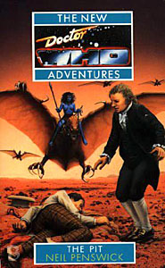

|
The Pit
|
BASIC PLOT DOCTOR COMPANIONS MATERIALISATION CIRCUIT PREPARATORY READING CONTINUITY REFERENCES Pgs 1-2 "In that time, religion had been abolished and rational science had been restored as the centre of the law." Time's Crucible again, but this will also be taken up in Christmas on a Rational Planet. Pg 16 "The Doctor held up a moth-eaten red velvet jacket. 'I'm sure I put jelly babies in here.'" The fourth Doctor's jacket (but see Continuity Cock-Ups). "The monsters you meet on your travels: Cybermen, Daleks, you know." The two most famous monsters (The Tenth Planet et al, The Daleks, et al). Pg 30 ""The Doctor dangled a yo-yo to the ground but the toy refused to return to his hand." Just like the fourth Doctor, specifically The Ark in Space. Pg 45 "A memory of her life before the Daleks had taken away her parents." Benny's backstory, as detailed in Love and War. Pg 60 "My granddaughter loved your work." Susan, seen in An Unearthly Child through The Dalek Invasion of Earth, The Five Doctors and who will later appear in Legacy of the Daleks. Pg 68 "What are years when you walk in eternity?" Pyramids of Mars. "I recognize ogrons, terrileptals and skeletal human remains." Day of the Daleks/Frontier in Space, The Visitation. But see Continuity Cock-Ups. Pg 87 Reference to Daleks. Pg 97 "First he was an old man, with neck length grey hair, then a middle aged man with a mop of black hair. [...] The final transformation was from a fat, jolly fellow wearing a multicoloured coat, to a mirror image of the star traveller standing beside him." We see visions of the first, second and sixth Doctors. Pg 104 Reference to Daleks. Pg 121 "I am a personal friend of Queen Victoria." Well, kind of, although he won't be for some time. See Tooth and Claw. Pg 146 "He talked about the murder victim sprawled across the pavement, and then wandered off into a conversation about a comedian called Ken Dodd." Delta and the Bannermen. "He had become known as Jack the Ripper." And we'll find out his true identity in Matrix. Depending on the arrangement of the chronology, of course, the seventh Doctor likely already knows this, but isn't saying. Devious bastard. Pg 148 "I once played this with Kublai Khan." Marco Polo (although he played backgammon there, not marbles as here). Pg 149 "A pastor I knew used it as the basis of his final sermon, before facing his greatest fear." The Curse of Fenric. Pg 150 "And then a great scientist, Rassilon, led the people into the scientific age. He overthrew the Pythia, who with her ancestors had ruled for an eternity. She cursed Gallifrey; a deadly plague ravaged our planet." Time's Crucible. Pg 151 "I remember Jo Grant. She was so young and fragile. She left me." The Green Death. Pg 154 "I trained with the great Harry Houdini, escape artist extraordinaire." Planet of the Spiders. Pg 168 "He suggested that the military man could contact either a Brigadier Lethbridge-Stewart or a Brigadier Bambera for clarification of his position." The Web of Fear etc, Battlefield. Pg 169 "He had contacted UNIT HQ and had confirmed that for a period in the 1970s and 1980s there had been a scientific advisor to Brigadier Lethbridge-Stewart." The Pertwee era, plus a bit on either side of it. "The Doctor had explained that in 1969 a man had walked on the moon; that unmanned space flights to other stars had been sent out in the 1970s and towards the end of the twentieth century manned space flights had visited other planets in the solar system." The Ambassadors of Death and The Android Invasion, primarily. Pg 215 "But then on my travels I met a vampire which had escaped a great war with the Time Lords." State of Decay. Pg 239 "The repository of knowledge, the Matrix, doesn't even refer to the war." The Matrix was first seen in The Deadly Assassin. Pg 254 And one of our great scientists, Rassilon, announced that he had discovered the principles of time travel. All that we had to do was harness the power of a black hole." The Deadly Assassin and The Three Doctors. Pg 255 "I could tell you so much. How in another experiment a scientist was sent into a black hole and was supposedly killed by the force of the explosion. He wasn't." This is likely Omega, as recounted in The Three Doctors. OLD FRIENDS AND OLD ENEMIES NEW FRIENDS AND NEW ENEMIES Kopyion.
CONTINUITY COCK-UPS PLUGGING THE HOLES [Fan-wank theorizing of how to fix continuity cock-ups] FEATURED ALIEN RACES Pg 25 Shapechangers. In their natural form, they're midgets, with round, smiling faces, vast, overweight bellies and bald heads, looking like contorted children's toys. They have a constipated walk, pig-like facial expressions and appear ageless. Pg 25 Kthons, the original inhabitants of the Althosian system. They're small, wizened creatures, naked and hairless, with skin like papyrus. Regardless of their age, they walk and talk like old men. Pg 23 Hunters, alien beasts, with lots of teeth that are native to the Althosian system. Pg 33 Small dinosaurs that are vegetarian and fast of foot. Pg 45 Incandescent insects. Pg 46 A wingless bird. Pg 55 A marmoset-like monkey. Pg 55 A lion. Pgs 55-56 The Cun, small, half-blind, pig-like creatures. Pg 70 Bapputchin, horse-like animals with stripes, heads like tigers and twice the height of normal horses. Pg 71 Flying creatures with bat-like wings, horns, savage teeth, yellow eyes, claws, long tails, forked tongues and skeletal bodies. Their bodies are hairless and composed of brown, reptillian hide (Shown on the front cover.) Pg 72 Giant jellyfish. Pg 84 Pterodactyls. Pg 85 Blue-painted women, some with parts of their bodies missing, others with their faces rearranged. Pg 88 A scorpion. Pg 106 Spiders over a hundred metres tall, with legs the size of tree trunks, two protruding molars and a body covered in matted hair, which hides the sensory organs. Pg 109 A rat. Pg 122 Ants. Pg 122 A shrew. Pg 153 A dark green snake, seven metres long. Although, it turns out to be mechanical (pg 154), as do most of the creatures on the planet (pg 206). Pg 218 Galks, jackal-like creatures twice the size of dogs, that stand on their hind legs. Pg 260 The Yssgaroth. It resembles a huge serpent, with spikes and billowing dragon wings, dozens of eyes in its forehead, savage teeth, a long tongue and small horns. FEATURED LOCATIONS Pg 9 Nicaea, 2400. Pg 21 Aboard the Dragonslayer. Pg 27 The nameless seventh planet of the Althosian system. Pg 55 A barren world, in another universe (pg 135). Pg 57 A hopper. Pg 110 London, September 13, 1888 (pg 111). Pg 167 Salisbury Plain, present day (pg 169). IN SUMMARY - Robert Smith? |
|
 |